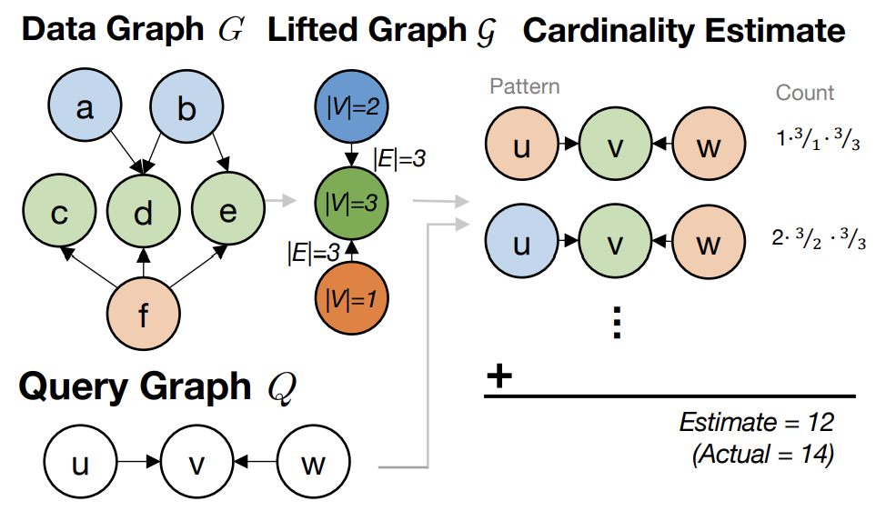
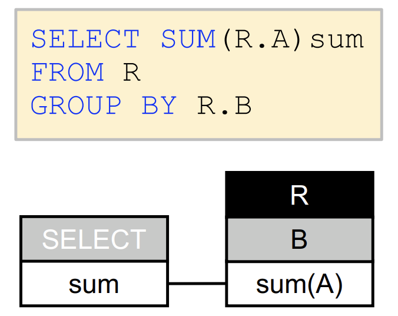

Publications
Color: A Framework for Applying Graph Coloring to Subgraph Cardinality Estimation
Kyle Deeds*, Diandre Miguel Sabale*, Moe Kayali, Dan SuciuVLDB 2025
[PDF] [Arxiv]
Graph workloads are difficult for traditional query optimizers because they feature large queries with frequent joins and complex correlations. COLOR applies a quasi-stable coloring to a graph, such that nodes in one color have a similar number of edges to nodes in another color. By treating groups of nodes that share the same color as supernodes, we create a compressed version of the graph. We show that using this smaller graph to calculate cardinality estimates is efficient and accurate. Notably, it is a novel application of graph theory to query optimization.
PatternVis: A Tool for Relational Pattern Visualization
Diandre Miguel Sabale, Wolfgang GatterbauerSIGMOD 2025 (Demo)
[PDF]
Query interpretation is crucial for education and practice, but it is especially growing more important as LLMs facilitate the development of Text2SQL tools. Relational Diagrams are one way to represent SQL queries, using the first-order logic in a query to define semantically-focused visualizations. They have been shown to improve the speed and accuracy of query pattern interpretation. We extend these diagrams for operations like CTEs and aggregations, then demonstrate PatternVis, a simple tool which automatically generates diagrams from SQL.
